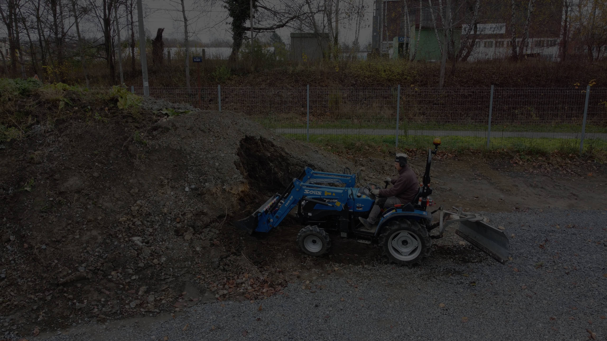

Výsadba slivoní
PŘÍKLAD PROJEKTU VÝSADBY
Slivoně – souhrnný název pro několik pomologických skupin peckovin, které jsou u nás nejrozšířenější a považované za nejhodnotnější slivoně. Pěstování slivoní má v českých zemích bohatou tradici. Slivoně se pěstují pro konzum plodů v čerstvém, zmrazeném nebo sušeném stavu, pro přípravu kompotů, marmelád, povidel, příp. také moštů. Plody slivoní mají vysokou výživnou hodnotu a jejich chemické složení a nutriční hodnota značně závisí na jejich druhu, odrůdě, stupni zralosti a na klimatických, půdních i pěstitelských podmínkách.
Pro správnou výsadbu slivoní je nutné dodržovat určitá pravidla, mezi která patří:

1) Krok – výběr pozemku
Slivoně patří k ovocným odrůdám, které jsou méně mrazuvzdorné. Není vhodné je vysazovat do mrazových kotlin, kde v zimě dochází k většímu poklesu teplot nebo do poloh, které jsou vystavené studeným severním větrům. Vhodné jsou rovinaté a všechny mírně svažité pozemky bez ohledu na světové strany. Pokud někdo dbá na světové strany, nejvhodnější jsou jihozápadní a západní svahy. Severní svahy můžeme doporučit pouze pro slivoně v nižších polohách a tehdy, když nejsou příliš prudké. Na severních svazích stromy častěji vymrzají během tuhých zim.
Další důležitý faktor, který by se neměl opomenout je vlhkost vzduchu a rozložení srážek. Pro pěstování ovocného druhu jsou nejvhodnější oblasti ty, kde průměr ročních srážek je vyšší než 600 mm a dostatečný podíl srážek připadá na jarní období. Nevhodné oblasti jsou ty, kde během jara bývá většinou suché počasí, protože tam většina plůdků opadává a slivoně zde špatně rodí. Nedostatek lze však kompenzovat závlahou. V našich klimatických podmínkách spíše vyhovuje rozložení srážek pozdním odrůdám než těm raným.
Dále je důležité pro pěstování slivoní použití půdy humózní, teplé a propustné. Lépe se jim daří tam, kde je vody spíše nadbytek než nedostatek. Avšak hladina vody by nikdy neměla být vyšší než 1 m pod povrchem půdy. Pro založení výsadby slivoní můžeme použít i pozemky s horší půdní bonitou, s nižším obsahem humusu a půdy, které jsou písčité na hlinitém podloží.
2) Krok – práce před vysazením
Při výsadbě se jamky hloubí jen na velikost danou kořenovým systémem vysazovaných stromků. Kořeny musíme v jamce volně rozmístit, nesmějí být vlivem malých rozměrů zmáčknuty nebo zkrouceny. Šířka jamky většinou postačí 0,4–0,5 m a hloubka 0,4 m.
Při ručním sázení pracují vždy dva až tři pracovníci. Jeden hloubí jamku rýčem a následně zasypává kořeny zeminou, druhý nůžkami řeže kořeny, pak přidržuje stromek a dusá zeminu ke kořenům. V další fázi se silným tlakem patou nohy utuží zemina ke kořenům a dbá se na to, aby povrch jamky byl co nejlépe udusán. Důkladné přitlačení půdy ke kořenům je důležité hlavně při jarní výsadbě, protože na něm často závisí ujmutí stromků. Ruční sázení se dá mechanizovat i traktorovým nebo ručním motorovým vrtákem. Použití těchto vrtáků však není vhodné na těžších půdách, neboť se na dně jamky vytváří méně propustná vrstva, která v prvním roce brání dobrému růstu kořenů.
Ve větších podnicích se pro sázení ovocných stromků využívají sázecí stroje. Stroj je založen na principu pluhu a pracovníci podle signálu vkládají do rozorané půdy stromky, které jsou současně zahrnovány. Po výsadbě je potřeba stromky ručně vyrovnat a upravit nahrnutou zeminu.
Stromky by se měly vysazovat o několik cm hlouběji, než byly pěstovány ve školce. U drobných pěstitelů se značně rozšířila výsadba kontejnerovaných stromků. Výhodou je, že nedochází k projevům výsadbového šoku, způsobeného narušením kořenového systému. Tyto stromky po výsadbě není nutné upravovat řezem a jejich vstup do plodnosti je rychlejší. Lze je vysazovat i v době vegetace.
3) Krok – výsadba
Před založením výsadby je vhodné připravit půdu minimálně 2 roky před vlastní výsadbou. Před zahájením je nutné odebrat vzorky půdy pro rozbor, ve kterém se zjistí obsah živin a kyselost půdy. Pro slivoně nejsou vhodné kyselé půdy s hodnotou pH pod 5. Pokud taková půda je, je nutné ji zmeliorovat vápněním při použití dolomitického vápence v dávce 2,5–3,0 t/ha.
Dále je nutné pozemek odplevelit a zvýšit v půdě obsah organické hmoty. Pro odplevelení jsou nejvhodnější kontaktní herbicidy typu Roundup. Aplikují se celoplošně v době intenzivního růstu plevelů v dávce 6,0 l/ha. Stejně tak dobře je na tom přípravek Roundup 360 SL v dávce 4,0 l/ha s příměsí 5,0 kg síranu amonného. Pýr se nejlépe likviduje v době intenzivního růstu, kdy dosahuje výšky 10–25 cm. Je-li to nutné, stromky můžeme vysazovat již 3 týdny po tomto zásahu.
Pozemek je potřeba vyhnojit i organickými hnojivy, nejlépe tedy chlévským hnojem v dávce 30–40 t/ha, který se zaorává do hloubky minimálně 30 cm. S hnojem se aplikuje i zásobní hnojení fosforečnými a draselnými minerálními hnojivy. Jejich dávky se stanovují podle výsledků rozborů půdy a podle doporučení příslušných agrolaboratoří.
Před založením výsadby by měl být pozemek oplocen. Je to nákladná investice, ale velice nezbytná, jestliže chceme mladé stromky spolehlivě ochránit před poškozováním polní či lesní zvěří.
Dalším důležitým parametrem je volba sponu výsadby, tj. vzdálenosti stromů od sebe. Rozhodující je především tvar stromu, který chceme pěstovat a ten je dán výškou kmene a rozměry koruny v době plné plodnosti stromů. U klasických kmenných tvarů, kde zakládáme pevnou kostru koruny a později ponecháme přirozenému vývoji se používají řídké spony a hustota výsadby nebývá větší než 400 stromů/ha. Naproti tomu v moderních hustých výsadbách, kde se stromy tvarují tak, aby nevytvářely prostorné koruny, ale jen střední osy obrostlé kratšími větvemi se vysazují stromy v hustém sponu, což je hustota dvojnásobně až trojnásobně větší. U silně rostoucích odrůd a při dobrých půdních podmínkách se používají spony řidší, naopak u odrůd slaběji rostoucích, při použití slaběji rostoucích podnoží a na horších půdách spony hustší. Na zahradách, kde se při obdělávání půdy nepoužívá žádná zvláštní mechanizace, je pro výsadbu nejvýhodnější čtvercový spon, kde je vzdálenost stromů od sebe určena finálními rozměry korun. Při tomto použití můžeme dosáhnout nejvyššího výnosu z jednotky plochy. Ve výsadbách, kde se slivoně pěstují na větších plochách a při ošetřování půdy a stromů se nelze obejít bez větší či menší mechanizace, se stromy vysazují v obdélníkových sponech. Stromy jsou v řadách, kde toto uspořádání vytváří uličky, které umožňují průjezd traktorů aj.
Před vysazením stromků je nutné dbát na to, zda byly stromky převáženy v nekrytém prostoru nebo byly skladovány v nechráněných prostorech, jestliže ano, je nutné co nejdříve obnovit jejich životaschopnost ponořením kořenů nebo celých stromků na 1–2 dny do vody. Po vyjmutí je třeba poškozené části kořenů odstranit a dlouhé kořeny, které by překážely při výsadbě, zkrátit.
Jestliže vysazujeme stromky ručně ze suchého a větrného počasí, je lepší rozvážet navlhčené sazenice ve svazcích a kořeny upravovat až během sázení.
4) Krok – údržba
Ošetřování stromků po výsadbě je velice důležité a to hned z několika důvodů.
Ochrana proti okusu. Pokud není nová výsadba chráněna spolehlivým oplocením nebo její umístění dostatečně neeliminuje riziko poškození okusem zvěří, měly by být stromky co nejdříve po výsadbě opatřeny chrániči vhodnými k tomuto účelu. Existuje několik typů chráničů z plastů, bohužel mnoho z nich se po přemrznutí rozpadne. Dále se dá použít husté pletivo z měkčího plastu, který působí příznivě i finančně.
Nakopčení zeminy. V případě podzimní výsadby je vhodné stromky po výsadbě nakopčit zeminou nebo mulčovat dobře uleženým chlévským hnojem, kompostem nebo jiným organickým materiálem. Hrůbek kolem kmínku se nakrývá do výšky 15–30 cm, nakrytí zde působí jako ochrana proti namrzání. Jakmile přijde jaro, hrůbky kolem stromků se rozhrnou a upraví tak, aby se voda ze srážek v co největším množství zadržela v prostoru kořenů. Hnůj nebo kompost později působí jako startovací hnojivo a může zčásti kompenzovat i důsledky únavy půdy. Hnůj by měl být od kmínku nejméně 10 cm, aby nepoškozoval kůru.
Řez. Ve většině pěstitelských systémů se stromky po výsadbě zpětně seřezávají podle zásad jejich tvarování. Řezem se vyrovnává hlavně poměr mezi poškozeným kořenovým systémem a nadzemní částí. Při klasickém řezu se u stromků se zapěstovanou korunkou zkrátí výhony asi o 1/3 až 2/3 nebo se redukuje jejich počet.
Závlaha. Pokud přichází sušší období po jarní výsadbě, je potřeba stromky dobře zalévat. V intenzivních hustých výsadbách, zejména v teplejších oblastech je vhodná kapková závlaha.
Přihnojování. Po výsadbě se doporučuje přihnojit pouze malou dávkou dusíku na jaře v množství asi 30 g ledku amonného na každý stromek. Ve výsadbě v hustých sponech to odpovídá asi 10–15 kg čistého dusíku na 1 ha. Hnojivo aplikujeme do kruhu o poloměru 0,3 m kolem kmínku v době sucha.
Ochrana proti chorobám a škůdcům. Provádí se v prvním roce po výsadbě v případě jejich výskytu, je vhodná pravidelná kontrola celé výsadby v týdenním intervalu. Pokud se vyskytuje savý hmyz (především mšice) je důležitá včasná likvidace na jednotlivých stromech. Takto se dá předejít celoplošné aplikaci ochranného postřiku. Také je důležité dbát první rok na udržování plevele. Nejčastěji se používá ruční okopávka nebo postřik kontaktními herbicidy.